컴퓨터응용가공산업기사 (2003-03-16 기출문제)
1과목: 기계가공법 및 안전관리
1. 배럴가공(barrel finishing)을 하면 여러가지 결과를 얻을 수 있다. 여기에 해당되지 않는 것은?
- 연삭의 효과
- 스케일 제거
- 버니싱(burnishing) 작용
- 도금의 효과
(정답률: 68%)

2. 공작물의 직경이 ø 50㎜인 경강을 세라믹 공구로 절삭속도 300m/min의 조건으로 선삭가공하려고 할 때, 주축 회전수는?
- 약 480rpm
- 약 1350rpm
- 약 1910rpm
- 약 2540rpm
(정답률: 71%)
3. 줄 눈금의 크기 표시가 맞는 것은?
- 1[㎜]2내에 있는 눈금의 수
- 1[㎜]에 대한 눈금의 수
- 1[inch]에 대한 눈금의 수
- 1[inch]2내에 있는 눈금의 수
(정답률: 34%)
4. 만네스만식 제관법은 다음의 어느 제관법에 속하는가?
- 단접관법
- 용접관법
- 천공법(piercing process)
- 오무리기법(cupping process)
(정답률: 52%)
5. 선삭(turning)작업에서 일반적으로 하지 않는 것은?
- 기어가공작업
- 나사깎기
- 테이퍼작업
- 널링
(정답률: 52%)
6. 연삭 숫돌의 파손 원인이 아닌 것은?
- 숫돌과 공작물, 숫돌과 지지대간에 불순물이 끼었을 경우
- 숫돌이 과도한 고속으로 회전하는 경우
- 숫돌의 측면을 공작물로 심하게 삽입됐을 경우
- 숫돌이 진원이 아닐 경우
(정답률: 58%)
7. 어미자의 최소눈금이 0.5㎜이고 아들자 24.5㎜를 25등분한 버니어캘리퍼스의 최소측정값은?
- 0.⑤㎜
- 0.01㎜
- 0.025㎜
- 0.02㎜
(정답률: 44%)
8. 공작물 고정 장치가 없는 지그는?
- 템플릿 지그(template jig)
- 플레이트 지그(plate jig)
- 앵글플레이트 지그(angle plate jig)
- 테이블 지그(table jig)
(정답률: 40%)
9. 스프링 백(spring back)이란?
- 스프링에서 장력의 세기를 나타내는 척도이다.
- 스프링의 피치를 나타낸다.
- 판재를 구부릴 때 하중을 제거하면 탄성에 의해 약간 처음 상태로 돌아가는 것이다.
- 판재를 구부렸을 때 구부린 모양이 활 모양으로 되는 현상이다.
(정답률: 64%)
10. 호닝(honing)작업에서 옳지 않은 것은?
- 가공시간이 짧다.
- 진원도 및 직선도를 바로 잡을 수 있다.
- 크기를 정확히 조절할 수 있다.
- 표면 정밀도를 향상시키지 못한다.
(정답률: 58%)
11. 소성가공에서 열간가공과 냉간가공을 구분하는 온도는?
- 금속이 녹는 온도
- 변태점 온도
- 발광 온도
- 재결정 온도
(정답률: 77%)
12. ø 40의 연강봉에 리드(lead)240㎜의 비틀림 홈을 밀링에서 깎고자 한다. 이 때 테이블은 몇도 몇분 회전시켜야 하는가?
- 약 27° 38′
- 약 35° 48′
- 약 42° 51′
- 약 50° 06′
(정답률: 30%)
13. 직류 아크용접에서 모재에 (+)극, 용접봉에 (-)극을 연결하여 용접할 때의 극성은?
- 역극성
- 정극성
- 용극성
- 모극성
(정답률: 47%)
14. 연삭작업에서 눈메꿈(loading)을 일으킨 칩을 제거하여 깎임새를 회복시키는 작업은?
- 드레싱(dressing)
- 보딩(boarding)
- 크러싱(crushing)
- 셰이핑(shaping)
(정답률: 72%)
15. 매치 플레이트(match plate)에 대한 설명 중 맞는 것은?
- 주형에서 소형 제품을 대량으로 생산할 때 사용된다.
- 목형의 평면을 깎을 때 사용된다.
- 주형을 다져 목형을 만들 때 사용된다.
- 주물사의 입도를 분류할 때 사용된다.
(정답률: 45%)
16. 파이프끼리 서로 맞대기 용접을 하는데 가장 좋은 용접 결과를 얻을 수 있는 것은?
- 가스 압접
- 플래시버트 용접(flash butt welding)
- 고주파 유도 용접
- 초음파 용접
(정답률: 36%)
17. 나사의 측정 대상이 아닌 것은?
- 유효지름
- 리드각
- 산의 각도
- 피치
(정답률: 46%)
18. 압연가공에서 강판을 압연할 때, 사용하는 롤러(roller)는?
- 원통형 roller
- 홈형 roller
- 개방형 roller
- 밀폐형 roller
(정답률: 57%)
19. 경도가 가장 큰 열처리 조직은?
- 오스테나이트(austenite)
- 마르텐사이트(martensite)
- 솔바이트(sorbite)
- 펄라이트(pearlite)
(정답률: 74%)
20. 프레스가공 방식에서 상하형이 서로 무관계한 요철(凹凸)을 가지고 있으며 재료를 압축함으로써 상하면상에는 다른 모양의 각인(刻印)이 되는 가공법은?
- 코이닝 가공(coining work)
- 굽힘가공(bending work)
- 엠보싱가공(embossing work)
- 드로잉가공(drawing work)
(정답률: 34%)
2과목: 기계설계 및 기계재료
21. 마찰차의 응용범위와 거리가 가장 먼 항목은?
- 전달력이 크지 않고 속도비가 중요하지 않은 경우
- 회전속도가 커서 보통기어를 쓰기 어려울 경우
- 양 축간을 자주 단속할 필요가 있을 경우
- 정확한 속도비가 필요할 경우
(정답률: 49%)
22. 2톤의 하중을 들어 올리는 나사 잭에서 나사 축의 바깥지름을 구한 것으로 맞는 것은? (단, 허용인장응력 = 6㎏f/mm2이고, 비틀림 응력은 수직응력의 1/3 정도로 본다.)
- 24㎜
- 26㎜
- 28㎜
- 30㎜
(정답률: 19%)
23. 주조, 단조, 리벳이음 등에 비해 용접 이음의 장점으로 틀린 것은?
- 사용재료의 두께 제한이 없다.
- 기밀 유지에 용이하다.
- 작업 소음이 많다.
- 사용기계가 간단하고, 작업 공정수가 적어 생산성이 높다.
(정답률: 38%)
24. 양은(洋銀, Nickel-silver)의 구성 성분은?
- Cu-Ni-Fe
- Cu-Ni-Zn
- Cu-Ni-Mg
- Cu-Ni-Pb
(정답률: 47%)
25. 폭(b) × 높이(h) = 10 X 8인 묻힘키이가 전동축에 고정되어 25,000 ㎏f.㎜의 토크를 전달할 때, 축지름 d는 몇 ㎜정도가 적당한가? (단, 키이의 허용 전단응력은 3.7 ㎏f/mm2 이며, 키이의 길이는 46㎜ 이다.)
- d = 29.4
- d = 35.3
- d = 41.7
- d = 50.2
(정답률: 31%)
26. 담금질된 강의 경도를 증가시키고 시효변형을 방지하기위한 목적으로 0℃ 이하의 온도에서 처리하는 방법은?
- 저온 담금 용해처리
- 시효 담금처리
- 냉각 뜨임처리
- 심냉처리
(정답률: 71%)
27. 축간거리 55 ㎝인 평행한 두축 사이에 회전을 전달하는 한쌍의 평기어에서 피니언이 124 회전할 때 기어를 96회전 시키려면 피니언의 피치원지름을 얼마로 하면 되겠는가?
- 124㎝
- 96㎝
- 48㎝
- 62㎝
(정답률: 36%)
28. 켈밋(kelmet)은 베어링용 합금으로 많이 사용된다. 성분은 구리(Cu)에 무엇을 첨가한 합금인가?
- 아연(Zn)
- 주석(Sn)
- 납(Pb)
- 안티몬(Sb)
(정답률: 42%)
29. 회전속도가 200rpm으로 10㎰을 전달하는 연강 실체원축의 지름이 얼마 정도인가? (단, 허용응력 τ = 210㎏f/cm2이고, 축은 비틀림 모멘트만을 받는다.)
- d = 44.3㎜
- d = 49.1㎜
- d = 54.7㎜
- d = 59.8㎜
(정답률: 20%)
30. 24금이란 순금(Au) 몇 %가 함유된 것인가?
- 18
- 24
- 75
- 100
(정답률: 55%)
31. 경화능 향상에 효과적이며 첨가량이 1% 이상이면 결정입자를 조대화하여 취성을 크게 하는 성분은?
- Ni
- Cr
- Mn
- Mo
(정답률: 23%)
32. 담금질시 냉각의 3단계를 거쳐 상온에 도달하는데 냉각되는 순서로 맞는 것은?
- 증기막단계 → 대류단계 → 비등단계
- 대류단계 → 비등단계 → 증기막단계
- 대류단계 → 증기막단계 → 비등단계
- 증기막단계 → 비등단계 → 대류단계
(정답률: 27%)
33. 강에 함유되어 있는 황(S)의 편석이나 분포 상태를 검출하는데 사용되는 검사법은?
- 감마선(γ)검사법
- 설퍼 프린트법
- X-선 검사법
- 초음파 검사법
(정답률: 14%)
34. 볼베어링에서 베어링 하중을 2배로 하면 수명은 몇 배로 되는가?
- 4배
- 1/4배
- 8배
- 1/8배
(정답률: 33%)
35. 다음 중 비금속 재료는?
- Al2O3
- Au
- Ni
- Co
(정답률: 50%)
36. 다음중 기능성 재료에 해당하지 않는 것은?
- 형상기억 합금
- 초소성 합금
- 제진 합금
- 특수강
(정답률: 41%)
37. 50kgf의 하중을 받고 처짐이 16mm생기는 코일스프링에서 코일의 평균직경 D=16mm, 소선직경 d=3mm, G=0.84× 104kgf/mm2 이라 할 때 유효권수 n은 얼마인가?
- 3
- 5
- 7
- 9
(정답률: 20%)
38. 마찰차의 접촉면에 종이, 가죽 및 고무 등의 비금속 재료를 붙이는 이유는 무엇인가?
- 마찰각을 작게 하기 위하여
- 마찰차의 마멸을 방지하기 위하여
- 마찰계수를 크게 하기 위하여
- 회전수를 줄이기 위하여
(정답률: 46%)
39. 저널의 지름이 25 mm, 길이가 50 mm, 베어링하중이 3000kgf인 저어널 베어링에서 베어링 압력(kgf/mm2)은?
- 2.4
- 3.0
- 3.6
- 4.2
(정답률: 32%)
40. 순철에는 없으며, 강의 특유한 변태는?
- A1
- A2
- A3
- A4
(정답률: 46%)
3과목: 컴퓨터응용가공
41. 이차 곡면(quadric surface)의 일반적 표현 방식은F(x,y,z)=ax2+by2+cz2+dxy+eyz+fzx+gx+hy+kz+i=0 로 나타내며 이를 VCV'=0 의 행렬식으로 표현할 수 있다.
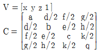
이때 행렬식 C의 특성에 따라 4가지 그룹으로 구분할 수 있는데 해당하지 않는 내용은?- 일체형 쌍곡면
- 원 타원, 분리형 쌍곡면
- C가 2행인 원통
- C가 3행인 원통
(정답률: 29%)
42. 직사각형의 밑변을 고정시킨 상태에서 이를 찌그러트려 평행사변형으로 만들려고 할 때 사용되는 변환은?
- 전단 변환 (shearing)
- 반사 변환 (reflection)
- 회전 변환 (rotation)
- 크기 변환 (scaling)
(정답률: 68%)
43. 떨어져서 구성된 두 곡면의 접선, 법선벡터를 일치시켜 곡면을 구성시키는 방법은?
- Smoothing
- Blending
- Filleting
- Stretching
(정답률: 53%)
44. 정면도의 정의로 맞는 것은?
- 물체의 각면 중 가장 그리기 쉬운면을 그린 그림
- 물체의 뒷면을 그린 그림
- 물체를 위에서 보고 그린 그림
- 물체 형태의 특징을 가장 뚜렷하게 나타내는 그림
(정답률: 62%)
45. 기어를 그릴 때 사용되는 선의 설명으로 틀린 것은?
- 잇봉우리원(이끝원)은 굵은 실선으로 그린다.
- 피치원은 가는 1점 쇄선으로 그린다.
- 이골원(이뿌리원)은 가는 실선으로 그린다.
- 잇줄 방향은 통상 3개의 굵은 실선으로 그린다.
(정답률: 54%)
46. 40H7은
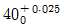
, 40G6은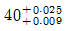
라고 할 때 40G7의 공차 범위는 얼마인가?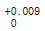
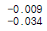
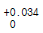
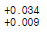
(정답률: 39%)
47. 다음은 컴퓨터의 기본구성을 나타낸 것이다. □ 안에 들어갈 것으로 옳은 것은?
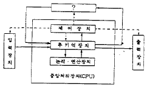
- 인터페이스(interface)
- 보조 기억 장치(auxiliary memory)
- 부호기(encoder)
- 마이크로프로세서(microprocessor)
(정답률: 72%)
48. XY평면 위의 점(10, 20)을 원점을 중심으로 시계 방향으로 45° 회전시킬 때의 좌표값은?
- (21.2, 7.1)
- (20, 40)
- (7.1, 21.2)
- (10.2, 20.1)
(정답률: 28%)
49. 음영기법(shading) 방법에는 여러 가지가 있는데 다음 중 가장 현실감이 뛰어난 음영기법은?
- 퐁(Phong) 음영기법
- 구로드(Gouraud) 음영기법
- 평활(smooth) 음영기법
- 단면별(faceted) 음영기법
(정답률: 43%)
50. CAD의 표준 형상기술 소프트웨어로써 서로 다른 CAD SYSTEM의 데이터의 교환을 목적으로 하는 것은?
- GKS
- CORE
- MAP
- IGES
(정답률: 74%)
51. "구멍의 최대 허용치수 - 축의 최소 허용치수"가 나타내는 것은?
- 최소 틈새
- 최대 틈새
- 최소 죔새
- 최대 죔새
(정답률: 67%)
52. 스프로킷 제도시 바깥지름은 어떤 선으로 도시하는가?
- 굵은 실선
- 가는 실선
- 굵은 파선
- 가는 1점 쇄선
(정답률: 47%)
53. 도면에 사용하는 가는 1점쇄선의 용도에 의한 명칭에 해당되지 않는 것은?(오류 신고가 접수된 문제입니다. 반드시 정답과 해설을 확인하시기 바랍니다.)
- 중심선
- 기준선
- 피치선
- 파단선
(정답률: 47%)
54. 다음 그림에서 ⓐ와 같은 투상도를 무엇이라고 부르는가?
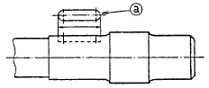
- 부분 확대도
- 국부 투상도
- 보조 투상도
- 부분 투상도
(정답률: 48%)
55. SM10C로 표시된 재료기호의 10C는 무엇을 나타내는가?
- 재질번호
- 재질등급
- 최저 인장강도
- 탄소 함유량
(정답률: 65%)
56. 형상은 같으나 치수가 다른 도형등을 작성할 때 가변되는 기본도형을 작성하여 놓고 필요에 따라 치수를 입력하여 비례되는 도형을 작성하는 기능을 무엇이라 하는가?
- 매크로화 기능
- 디스플레이 변형 기능
- 도면화 기능
- 파라메트릭 도형 기능
(정답률: 60%)
57. CAD그래픽 소프트웨어를 구성하는 5대 중요 모듈이 아닌 것은?
- 그래픽 모듈(graphic module)
- 서류화 모듈(documentation module)
- 서페이스 모듈(surface module)
- 입· 출력 모듈(input & output module)
(정답률: 28%)
58. 도면의 크기와 대상물의 크기 사이에는 정확한 비례 관계를 가져야 하나 예외로 할 수 있는 도면은?
- 부품도
- 제작도
- 설명도
- 확대도
(정답률: 29%)
59. 모듈 6, 잇수 Z1 = 45, Z2 =85, 압력각 14.5°의 한쌍의 표준기어를 그리려고 할 때, 기어의 바깥지름 D1, D2를 얼마로 그리면 되는가?
- 282mm, 522mm
- 270mm, 510mm
- 382mm, 622mm
- 280mm, 610mm
(정답률: 10%)
60. 2차원에서 반시계 방향으로 θ각 만큼 회전시켰을 때의 회전 변환 행렬은?
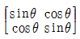
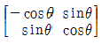
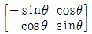
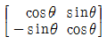
(정답률: 39%)
4과목: 기계제도 및 CNC공작법
61. 머시닝센터에서 지름 50㎜의 페이스커터로 25m/min의 절삭속도로 절삭하려고 하는 경우 주축의 회전수와 커터의 매분 이송속도를 결정하면? (단, 커터의 날수 12개, 날 1개당 이송 0.2㎜)
- 125rpm, 300㎜/min
- 127rpm, 31.8㎜/min
- 159rpm, 31.8㎜/min
- 159rpm, 382㎜/min
(정답률: 37%)
62. 다음 솔리드 모델링의 특징을 설명한 것 중 해당되지 않는 것은?
- 이동, 회전등을 이용한 형상의 파악이 불가능하다.
- 데이터의 처리시간이 길다
- 불 대수(boolean)연산이 적용된다.
- 은선 제거가 가능하다.
(정답률: 58%)
63. 다음 중 1.5초 동안 일시정지하는 프로그램 지령이 잘못된 것은?
- G04 X1.5;
- G04 U1.5;
- G04 P1.5;
- G04 P1500;
(정답률: 69%)
64. 직경지령으로 설정된 최소지령 단위가 0.001mm인 CNC선반에서 U30.으로 지령한 경우 공구의 실제 이동량은?
- 10mm
- 15mm
- 20mm
- 30mm
(정답률: 28%)
65. 다음 CNC 서보기구 제어시스템 특성 중 Closed loop 제어 방식을 가장 올바르게 설명한 것은?
- 모터축으로 부터 위치검출을 행하여 볼나사의 회전 각도를 검출하는 방식
- 기계의 테이블에 부착된 직선 scale이 위치 검출을 행하여 피드백하는 방식
- 모터축으로 부터 위치검출을 리졸버에 의하여 제어하는 방식
- 모터축으로 부터 위치검출을 직선 scale에 의하여 제어하는 방식
(정답률: 36%)
66. 모델링에 관한 설명 중 틀린 것은?
- 와이어 프레임 모델은 구조가 간단하고 처리가 용이하다.
- 서피스 모델은 단면도 작성, 숨은선 소거, NC 툴패스등이 가능하다.
- 서피스 모델은 질량 특성 계산이 용이하다.
- 와이어 프레임 모델은 단면도 작도, 숨은선 소거, 상관선 작도 등이 불가능하다.
(정답률: 63%)
67. 다음 중 DNC에 관한 설명으로 틀린 것은?
- NC 테이프를 사용하지 않고 CNC가공을 행할 수 있다.
- 하드 와이어드(hard wired) CNC라도고 한다.
- 여러 대의 CNC 공작기계를 한 대의 컴퓨터로 제어할수 있다.
- 복잡한 항공기 부품의 가공 등에 사용된다.
(정답률: 21%)
68. 알루미늄 소재를 머시닝센터에서 ø6의 HSS드릴로 드릴링하고자 할때, 절삭조건표에 의하면 드릴 절삭속도는 V=32m/min이다. CNC 프로그램에서 드릴 회전수 N(rpm)는?
- 1698
- 1598
- 1498
- 1398
(정답률: 54%)
69. 3차원 공간 곡선으로써 알맞지 않은 것은?
- Bezier곡선
- Archimedes곡선
- NURBS곡선
- B-spline곡선
(정답률: 62%)
70. 다음 중 Bezier 곡선을 설명하는 것이 아닌 것은?
- 첫 정점과 마지막 정점을 통과한다.
- 볼록포(convex hull) 성질이 있다.
- 다항식 곡선의 차수는 (polygon의 정점의 개수 - 1)이다.
- 곡선의 양 끝점과 접선 벡터를 사용하므로 상호 대화적인 설계작업에 가장 적합하다.
(정답률: 34%)
71. 3차원 형상모델을 분해모델로 저장하는 방법 중 틀린 것은?
- 복셀(Voxel) 모델
- 옥트리(Octree )표현
- 세포분해(Cell Decomposition) 모델
- Facet 모델
(정답률: 51%)
72. CAD/CAM 시스템간에 데이터베이스가 서로 호환성을 가질수 있도록 모델의 입출력데이터를 표준형식으로 작성하는 기능은?
- ISO
- IGES
- LISP
- ANSI
(정답률: 83%)
73. CNC 공작기계에서 백래시(BACK LASH)를 감소시키며 회전 운동을 직선운동으로 바꾸어 주는 장치는?
- 리졸버
- 컨트롤러
- 리드스크루
- 볼스크루
(정답률: 52%)
74. CNC 선반의 프로그래밍에 사용되는 보조기능 중 보조프로그램을 호출하는 기능은?
- M78
- M79
- M98
- M99
(정답률: 75%)
75. 다음 중 와이어컷 방전 가공기의 작업 전 점검 사항으로 틀린 것은?
- 상하 노즐(nozzle) 선단의 팁(tip)에 상처나 깨짐이 없는가 점검한다.
- 가공 탱크내의 와이어 칩(wire chip) 및 가공 칩을 제거한다.
- 가공액 공급 장치의 액면 레벨(level)을 점검하여 적을 때는 보충한다.
- 조작반 후부의 에어 필터(air filter)를 매일 교환하여 준다.
(정답률: 72%)
76. CNC선반에서 다음 도면의 구석 R6의 가공 프로그램으로 N002에 가장 적당한 것은?
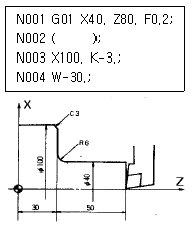
- G01 X40. F0.2;
- G01 Z30. R6. F0.18;
- G01 X100. C-3. F0.2;
- G01 Z0. R6. F0.18;
(정답률: 57%)
77. 다음과 같은 CNC선반 프로그램이 있다. 전개번호 N30에서 의 주축 회전수는 몇 rpm 인가?(단, 직경지령 사용)
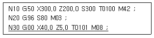
- 300
- 80
- 637
- 96
(정답률: 32%)
78. 방전가공에서 가공액의 작용이 아닌것은?
- 전극에 대한 냉각작용을 한다.
- 가공 칩에 대한 융착작용을 한다.
- 전극에 대한 소모방지 작용을 한다.
- 가공칩의 운송,배출작용을 한다.
(정답률: 48%)
79. 솔리드 모델링(solid modelling)방법의 특징으로 적당한 것은?
- 물리적 성질의 계산이 불가능하다.
- CSG(Constructive Solid Geometry)에서는 모델→ 면→ 모서리선 → 꼭지점식으로 데이터 구조를 계층구조로 표현한다.
- 경계 표현 방법(Boundary Representation)에서는 기본적인 프리미티브의 합, 차, 곱 등의 연산으로 솔리드 모델을 구성한다.
- 복잡한 계산이 필요하여 연산 처리에 시간이 걸린다.
(정답률: 36%)
80. B-spline 곡선을 보다 다양하게 표현하고 있는 곡선은?
- Bezier 곡선
- Spline 곡선
- NURBS 곡선
- Ferguson 곡선
(정답률: 50%)